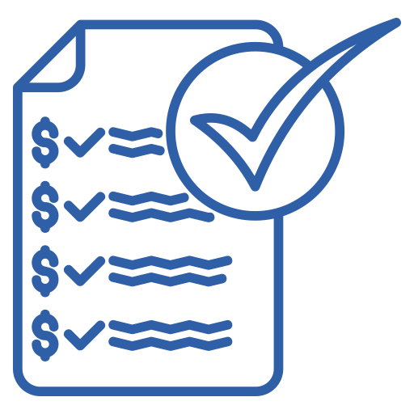

PAQUETE MAMA
Protección temprana y cuidados integrales
Nuestro paquete de atención mamaria combina examen clínico,
ecografía especializada y asesoría médica para detección
temprana y acompañamiento personalizado.
¿Qué incluye este paquete?
-
Ecografía de mama con traductor de 7 MHz o más,
incluyendo marcación ecográfica prequirúrgica.
-
Biopsia de mama con aguja (trucut).
-
Estudio de coloración básica de biopsia.
-
Estudio de coloración inmunohistoquímica en biopsia.
-
Estudio de receptores hormonales en biopsia.
-
Valoración médica especializada.
Beneficios principales
Detección temprana
Mayor seguridad con estudios preventivos
de alta calidad.
Atención especializada
Profesionales enfocados en salud mamaria
y prevención integral.

Informe completo
Resultados claros con recomendaciones
y seguimiento médico.
Preparación para tu cita
-
No uses desodorante, cremas o talcos
en axilas y senos el día del examen.
-
Lleva ropa cómoda de dos piezas.
-
Trae estudios anteriores si los tienes.
-
Informa si estás embarazada,
en lactancia o tienes implantes.
-
Agenda preferiblemente después
de tu periodo menstrual.